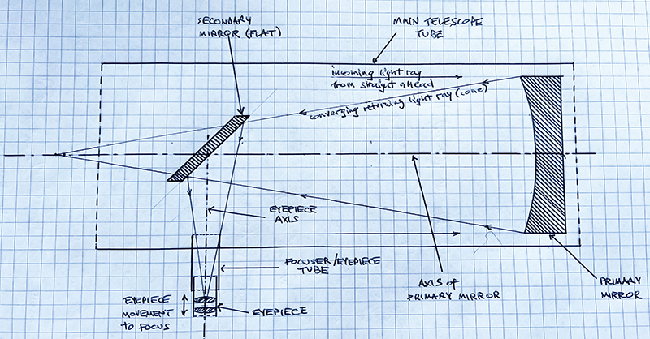

|
|
Collimation of a Newtonian Reflector ... article still under construction, as of 18th October 2023 ... watch this space ... link if you simply want to go straight to the basic method
If you’re reading this, the chances are you’ve just got yourself a Newtonian reflector, and have realized perhaps belatedly that “Newts” come with a problem: they need “collimating”. Which is to say, the optical components need lining up. BY YOU. Yikes, you think. Collimation Definition: Alignment and coincidence of the principal axes of the telescope's optical components: namely the vertical axis of the Primary Mirror, and the central axis of the eyepiece/focuser. When you buy a refractor, the object most people imagine on hearing the word "telescope", you naturally and reasonably expect all its optical components (lenses) to have been professionally aligned in the factory before delivery, and that you’ll never to have to adjust anything for the lifetime of the scope. Imagine buying a telescope where you have to align all the lenses yourself. Unfortunately, when you buy a Newtonian reflector, that is exactly what you get: an assembly of components ostensibly in tne right place, but where the job of finely aligning everything is down to you. Also unfortunately, the image you'll see is highly sensitive to the correctness of the collimation. An out-of-collimation reflector will yield horrid views. That Newtonians get supplied like this seems wrong: a marketplace aberration that shouldn’t be allowed. Like delivering you a car whose wheels and suspension you have to align and tune yourself. There are in fact good reasons for this. Big Newtonians are designed to be regularly dismantled and re-assembled, requiring a recollimation every time. Their mirrors are thick slabs of glass which change shape as they change temperature outside at night, sometimes needing recollimation during an observing session! Luckily, collimating a Newtonian is not difficult, although it may seem so at first. There is no shortage of websites, books, articles and forums describing how to do it, nonetheless I feel there is room for another one. None of the descriptions I’ve read strikes the right balance of what “things” you should do, why you should do them, how important they are, and the consequences of not getting one or another quite right. In other words, which steps are crucial, and which perhaps don’t matter so much. Before getting into the collimation process itself, it’s worth first describing a Newtonian, and its various components. 
Whilst the familiar Refractor has a glass lens group at the front of its tube to divert and concentrate all the light from a particular faraway point striking any part of the lens area to a single point in the image, a Newtonian Reflector does the same using a concave mirror at the back of its tube. The incoming light travels to the “bottom” of the tube, bounces off the big curved mirror and gets reflected into a converging cone back the way it came. Before it gets to the focal point, the cone gets reflected sideways by a small central flat oval mirror (the Secondary Mirror or "Flat"), converging outside the tube and there creating the image, to be viewed by an eyepiece or a camera. This sideways-reflection allows your head to not be in the way of the incoming light when you look at the image with an eyepiece placed in the Focuser, at the cost of a small obstruction in the way of the primary mirror caused by the secondary mirror (a much smaller obstruction than your head!). Thus, a Newtonian comprises a big main mirror called the “Primary Mirror”; a “Secondary Mirror” which is smaller, flat, elliptical (oval-shaped), angled at 45 degrees (usually) and suspended on a “Spider” near the open end of the tube. Level with where the oval Secondary Mirror sits, there is a hole in the side of the main tube to which is attached the “Focuser”, which is itself an adjustable-length narrow tube into which the “Eyepiece” gets inserted. The secondary mirror is elliptical because when viewed from a 45-degree angle, from either the eyepiece or the primary mirror, perspective ensures that it appears to be circular. The Primary Mirror has an “optical axis”, which can be imagined as an invisible line rising perfectly vertically out of the exact centre of the mirror. This mirror sits on an adjustable frame (the “Primary Cell”) which allows it, and therefore its optical axis, to be tilted a few degrees in any direction using knobs or screws, usually from the back. The Eyepiece-and-Focuser Tube also has an optical axis, running down its exact centre. This Eyepiece tube is fixed in orientation, so its axis cannot be directly moved around. However, because the flat Secondary Mirror is "tiltable", the eyepiece axis CAN be moved around to effectively point at wherever is required at the bottom of the main tube. And this is the whole point.
As stated above, “Collimation” is defined as “aligning/making-coincident the axis of the eyepiece with the axis of the primary mirror”. The eyepiece axis can be thought of as pointing “in and down” to the centre of the Primary Mirror. And the Primary Mirror axis can be thought of as pointing “up and out” away from the centre of the primary, to the centre of the eyepiece. One simply has to adjust the tilt of the secondary to point the eyepiece axis at the centre of the primary, and adjust the Primary Cell’s knobs to point the primary’s axis up to the centreline of the eyepiece. So, to summarize, collimation of a Newtonian comprises 2 tasks, with a preliminary one: TASKS/STEPS 0: Preliminary: Place the secondary mirror in the correct position, astride the converging light-cone and opposite the focuser, to bounce the cone out sideways into the eyepiece tube; 1: Align the Focuser to the Primary: Aim the centreline of the eyepiece tube at the centre of the primary mirror, by tilting the secondary; 2: Align the Primary to the Focuser: Aim the vertical axis of the primary mirror back to the centre of the eyepiece tube, by adjusting the primary cell’s knobs. Relative importances: <2> is crucial to get as correct as you possibly can. <1> is also important, but more tolerant of small error. <0> is, by far, least important. Personally I don’t even count step 0 as “collimation” at all, merely a preparatory step. Getting this “wrong” merely excludes a bit of light from reaching the eyepiece: a Newtonian can be properly collimated and still have a badly-positioned secondary. Ease of action: <2> is extremely easy. <1> is quite easy. <0> can be extremely frustrating to achieve “perfection”, but need only be roughly visually “correct”, and there are anyway different definitions of what constitutes “correct”. To summarize:
HOW TO DO IT I’m going to describe how to "do it" twice. First will be basic “just do this and you’ll be fine” without too much discussion; second will involve more discussion about fine-tuning, with more preliminary steps, choices and provisos. TOOLS You will need one or more tools to perform collimation. I’ll describe how to collimate using each tool. They include: - collage pic of 4 main tools - Collimation Cap (for step 2, and very roughly doing step 0 & 1) A Collimation Cap is a simple disc/plug with a pinhole in the exact centre, that slots into the focuser's eyepiece hole. The inside face of the collimation cap is silvered, so its reflection in the primary mirror can be easily seen when you look through the pinhole, allowing you to collimate the primary (step 2). Cheshire Eyepiece (can be used for all steps) A Cheshire Eyepiece is a clever extension of the idea of a collimation cap. It is a tube that fits into the focuser, with a collimation cap at one end, a crosshair at the other end, and often an angled bright reflecting sideways-open face with a central hole. The pinhole at one end and the crosshairs at the other show you where the eyepiece axis is "aiming" (step 1). The reflection (in the primary mirror) of the angled face allows you to collimate the primary (step 2). The view of the secondary against the circular far end of the Cheshire allows you to judge the apparent circularity of the secondary (step 0). Concenter (for steps 0 and 1 and possibly step 2) A Concenter is essentially a Cheshire with the far crosshairs replaced by a series of concentric circles etched on a glass pane with a central hole. The circles allow you to better judge the "circularity" of the secondary (step 0). The central hole in the glass pane shows where the eyepiece is pointing (step 1). If you can make out the reflection (in the primary) of any part of the Concenter, you can collimate the primary too, but it may not be bright enough to be possible. Laser Collimator (for steps 1 and 2 – but beware!) A Laser Collimator is a tube that fits into the focuser and emits a laser-beam along its axis, to hit the primary mirror (step 1). The beam gets reflected back towards the eyepiece and its return-dot can be seen on the face of the laser (step 2). However, unless you're prepared to spend a lot on the laser, it will itself very likely not be collimated (i.e. the beam is not parallel to the laser). Using such a laser guarantees mis-collimation of both steps. i.e. spend money, or use a Cheshire. Others, for example auto-collimator, Barlowed laser, camera-based methods or star testing I will not describe at this basic level, as you’re only likely to use these once you’re fully au fait with the whole process. But I shall discuss them in the more comprehensive section later on. For a starter-out, I strongly recommend the Cheshire, though I appreciate that many will be unable to resist the apparent ease and simplicity of a laser. However, I repeat that many/most lasers you'll buy as a beginner will guarantee mis-collimation. Prelim (step 0): Placing of the Secondary Mirror The Secondary Mirror, slanted at approximately 45 degrees to the tube, is attached to a "boss" (itself attached to the main tube via 4 - sometimes 3 and rarely, just 1 - so-called spider-vanes) via a central sprung threaded screw, plus three grubscrews. The central screw moves the boss+mirror up and down the main tube. The three grub screws finely alter the mirror's tilt. To move the whole mirror up or down the tube, you must first unscrew the three grubs. - pic of secondary assembly - The intention here is to place this mirror such that its outline looks more-or-less circular when viewed through a pinhole at the eyepiece position. The tricky part is to actually determine where the outline is, against all the other reflected circular outlines. Using a Cheshire Eyepiece Place the Cheshire in the eyepiece holder, pinhole facing out. Look through the pinhole. You should see something like this: - cheshire through the pinhole - It's a confusing mass of reflections, dark and light discs, and criss-crosses, some out of focus. You're looking, at this stage, for the outline of the edge of the secondary mirror against the opposite wall of the main tube. To reduce confusion, you need to block off the reflection of the primary mirror, and make the opposite side of the main tube stand out. To do this, take 2 sheets of paper, of different shades. Tape one sheet "down the tube" from the secondary mirror to block off the primary. Attach the other sheet to the main tube wall, opposite the focuser. You'll be reaching down through the spider-vanes, so remove any jewellery, bracelets or watches to avoid catching anything. - diagram of paper sheets - ... article still under construction, as of 18th October 2023 ... watch this space ... | ||||||||||||||||||||||||||||||||
|
email: baltimoreastronomy@gmail.com | tel/WhatsApp: 089 613 0361
|